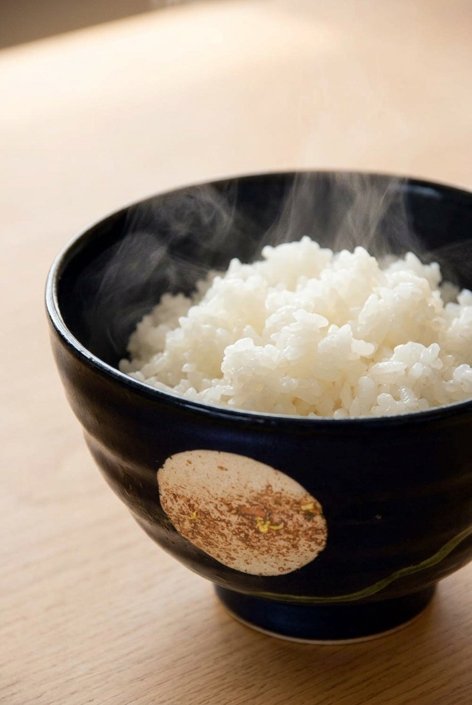

Every ceramic rice bowl claims to be "high quality," but the real difference between one that stays clean for years and one that stains and smells is a material fact you can actually measure. Here's what porcelain does differently, what the moon-in-mist glaze is, and whether this bowl is worth it.
See current price on Amazon →As an Amazon Associate, I earn from qualifying purchases.
Fire clay hot enough and long enough, and the clay particles fuse into a dense, glass-like body — a process called vitrification. Fully vitrified porcelain absorbs roughly 0–1% water by weight. Stoneware, by comparison, absorbs 1–3%, and everyday earthenware absorbs 8–12%. That gap isn't decorative trivia: a bowl that barely absorbs liquid also resists soaking up curry stains, soy sauce, and lingering food odors the way a more porous body does over years of daily use.
In the early 1600s, potters working near Arita in Saga Prefecture discovered pottery stone at Izumiyama — the deposit that let Japan produce true porcelain (stone-based, not clay-based) for the first time. That's the technical distinction between "Arita-yaki" and the stoneware traditions found elsewhere in Japan: porcelain is fired hotter and vitrifies harder, which is exactly what gives this bowl its low absorption and dense, glassy surface.
Most of the bowl is covered in a glossy, near-black glaze. Breaking through it on one side is a single matte, rust-speckled patch of exposed clay, crossed by a thin wandering line where the glaze thinned to almost nothing — the kind of effect that reads like a moon slipping out from behind mist (kasumi, 霞). Mist as a motif goes back to Heian-era Japanese painting, used specifically to suggest something appearing and dissolving rather than sitting still. Here it shows up as an intentional break in an otherwise uniform glaze, not a repeating pattern — each glossy-versus-matte contrast is the one visual idea this bowl commits to.
Arita-yaki porcelain rice bowl, near-black glossy glaze with a moon-in-mist (kasumi) matte break, made in Saga Prefecture, Japan.
See current price on Amazon →As an Amazon Associate, I earn from qualifying purchases.
This page contains an affiliate link — if you buy through it, it costs you nothing extra and helps support this site.